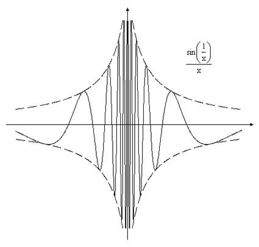

ТУ П 13.№2.
Бесконечно большая при  функция,
является неограниченной в окрестности точки
функция,
является неограниченной в окрестности точки  .
Выполняется ли обратное утверждение?
.
Выполняется ли обратное утверждение?
функция,
является неограниченной в окрестности точки .
Выполняется ли обратное утверждение?РЕШЕНИЕ:
Не всякая неограниченная функция является бесконечно большой.
Рассмотрим две неограниченных функции и
 .
.
.- – бесконечно большая
при
 , так как для любого числа
, так как для любого числа  можно указать окрестность точки
можно указать окрестность точки
 , в каждой точке которой
, в каждой точке которой 
- – является
неограниченной при , но
бесконечно большой не является, так как для любого числа в каждой окрестности точки можно указать точку, в которой , но в этой же окрестности
найдутся точки, не удовлетворяющие этому условию, для которых, например,.

Ответ: нет